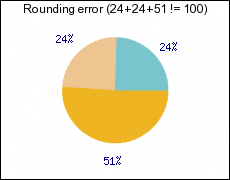
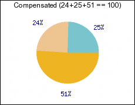
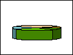
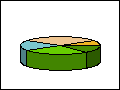
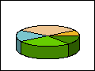
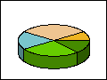
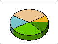
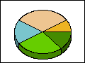
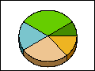

Table of Contents
- 16.1. Pie graphs
- 16.1.1. Hare/Niemeyer Integer compensation for Pie Plots
- 16.1.2. 2D-Pie plots
- 16.1.3. 3D-Pie plots
- 16.1.4. Ring plots
- 16.1.5. Exploding pie slices
- 16.1.6. Specifying and adjusting labels on pie plots
- 16.1.7. Adding drop shadows to the slices
- 16.1.8. Adding background images to Pie graphs
- 16.1.9. Specifying slice colors and using themes
- 16.2. Radar graphs
- 16.2.1. Adding radar plots to a radar graph
- 16.2.2. Adding plot-marks to radar plots
- 16.2.3. Client Side Image maps
- 16.2.4. Adjusting the overall properties of the radar graph
- 16.2.5. Adjusting the axis formatting
- 16.2.6. Adjusting grid lines for the radar graph
- 16.2.7. Using a logarithmic scale
- 16.2.8. Enabling anti-aliasing for radar graphs
- 16.2.9. A final example
- 16.3. Polar graphs
- 16.4. Gantt charts
- 16.4.1. The structure of a Gantt chart
- 16.4.2. Creating a Gantt graph
- 16.4.3. Adjusting the scale headers
- 16.4.4. Adding gantt objects to the chart
- 16.4.5. Additional formatting for activity bars (Gantt bars)
- 16.4.6. Adding visual indication of constraints between gantt objects
- 16.4.7. Grouping activities
- 16.4.8. Simplifying creation of basic Gantt charts
- 16.4.9. Using multiple title columns
- 16.4.10. Built-in icons for use in activity titles
- 16.4.11. More general Gantt formatting
- 16.4.12. Localizing the Gantt chart scale
- 16.4.13. CSIM Support in Gantt charts
- 16.4.14. Some final Gantt graph examples
All the plots we have discussed up to now have used some kind of x-y coordinate system. The library supports a number of graph types that does not use rectangular axis or scales. The supported graphs are shown below
|
(See 2D-Pie plots) |
(See 3D-Pie plots) |
(See Ring plots) |
|
(See Radar graphs) |
(See Polar graphs) |
(See Gantt charts) |
The main difference compared to the previous discussed x-y plots is that to all
pie plots are added based on the class PieGraph instead of the
Graph class used for all x-y graphs.
A problem that sometimes occur with the use of integer values for Pie charts is the problem with rounding error. Even with correct rounding of the individual pie slices using only integers as display values have the problem that it sometimes doesn't sum up to 100% as illustrated in Figure 16.7. Hare/Niemeyer pie plot integer compensation
This is in many circumstances not acceptable. The library includes the Hare/Niemeyer compensation that can be enabled. This will adjust the integer values so that it always sum up to 100%. The result of the compensation can be seen in Figure 16.7. Hare/Niemeyer pie plot integer compensation
Figure 16.7. Hare/Niemeyer pie plot integer compensation
|
 a) Problem with integer values |
 b) Hare/Niemeyer compensation |
Note
To enable this compensation the label type should be specified as
1 | $pieplot->SetLabelType(PIE_VALUE_ADJPERCENTAGE); |
In order to create Pie plots the module "jpgraph_pie.php"
must first be included.
The principle for creating Pie graphs follows the same structure as for line
graphs. First an instance of class PieGraph is created and then one
or several instances of class PiePlot is created and added to the
PieGraph instance as the following basic example shows
Example 16.1. A basic Pie graph (example26.php)
1 2 3 4 5 6 7 8 9 10 11 12 13 14 15 16 | // content="text/plain; charset=utf-8" require_once ('jpgraph/jpgraph.php'); require_once ('jpgraph/jpgraph_pie.php'); $data = array(40,60,21,33); $graph = new PieGraph(300,200); $graph->SetShadow(); $graph->title->Set("A simple Pie plot"); $p1 = new PiePlot($data); $graph->Add($p1); $graph->Stroke(); |
There are a few things to note here
-
By default all pie slices have the percentage shown just outside the slice.
-
The colors are automatically assigned to the slices.
-
The pie have the edges marked by default
-
The first slice start at 0 degrees (3 o'clock)
It is possible to adjust most of the aspects of a pie graph. in addition to the usual graph appearance adjustments discussed in Specifying and formatting the overall displayed graph the following methods can be used to adjust the appearance of the individual plots.
-
PiePlot::SetStartAngle($aAngle)Change the angle for the first slice
-
PiePlot::ShowBorder($aFlg=true)Show the border around and inside the pie
-
PiePlot::SetColor($aColor)Specify the color of the border of the pie
-
PiePlot::SetSliceColors($aColor)Specify the color of the slices
-
PiePlot::SetSize($aSize)Set the size of the pie plot. This can be specified as either a fraction of the minimum of the graph width and height or as a absolute size in pixels.
-
PiePlot::SetCenter($aX, $aY)Position the pie on the graph
-
PiePlot::value -
PiePlot::SetLabels($aLabels, $aLblPosAdj="auto")Specify the labels for each pie slice
-
PiePlot::SetLabelType($aType)By default the label is displayed as percentage. Using this method it is possible to change the automatic label to show the absolute value instead.
In order to show a basic addition we add a legend to the pie graph. We do this
by using the SetLegends() method. By adding the legends to the
previous example we get the result shown in Figure 16.9. Adding a legend to a pie plot ( example26.1.php)
Note
In the figure above we also moved the center of the pie slightly to the left to make more room for the legend box.
The text for the legends can also contain printf() style format
strings to format a number. The number passed on into this string is either the
absolute value of the slice or the percentage value. The same formatting can
also be used to format the legend labels.
This is done in complete analogy with the say multiple lines were added to a line graph. The following code snippet shows the principle
1 2 3 4 5 6 7 8 9 10 11 12 13 14 | $piegraph = new PieGraph($width,$height); $p1 = new PiePlot($data1); $p1->SetSize(0.2); $p1->SetCenter(0.3,0.6); $p2 = new PiePlot($data2); $p2->SetSize(0.2); $p2->SetCenter(0.7,0.6); $piegraph->Add($p1); $piegraph->Add($p2); |
The positioning and sizing of the plots must be done manually. In the following example we show an example where four pie plots are added to a graph
Example 16.2. Adding several pie plots to the same pie graph (pieex3.php)
1 2 3 4 5 6 7 8 9 10 11 12 13 14 15 16 17 18 19 20 21 22 23 24 25 26 27 28 29 30 31 32 33 34 35 36 37 38 39 40 41 42 43 44 45 46 47 48 49 50 | // content="text/plain; charset=utf-8" require_once ('jpgraph/jpgraph.php'); require_once ('jpgraph/jpgraph_pie.php'); // Some data $data = array(40,21,17,14,23); // Create the Pie Graph. $graph = new PieGraph(350,300); $graph->SetShadow(); // Set A title for the plot $graph->title->Set("Multiple - Pie plot"); $graph->title->SetFont(FF_FONT1,FS_BOLD); // Create plots $size=0.13; $p1 = new PiePlot($data); $p1->SetLegends(array("Jan","Feb","Mar","Apr","May")); $p1->SetSize($size); $p1->SetCenter(0.25,0.32); $p1->value->SetFont(FF_FONT0); $p1->title->Set("2001"); $p2 = new PiePlot($data); $p2->SetSize($size); $p2->SetCenter(0.65,0.32); $p2->value->SetFont(FF_FONT0); $p2->title->Set("2002"); $p3 = new PiePlot($data); $p3->SetSize($size); $p3->SetCenter(0.25,0.75); $p3->value->SetFont(FF_FONT0); $p3->title->Set("2003"); $p4 = new PiePlot($data); $p4->SetSize($size); $p4->SetCenter(0.65,0.75); $p4->value->SetFont(FF_FONT0); $p4->title->Set("2004"); $graph->Add($p1); $graph->Add($p2); $graph->Add($p3); $graph->Add($p4); $graph->Stroke(); |

For very busy Pie plots it can become too little space for the labels to be printed just beside the pie slice. For this purpose it is possible to use guide lines for the labels. The library will then draw a line from the center edge of the slices to the label which will be positioned further out from the Pie Plot.
There is one method that is primarily used to handle this
-
PiePlot::SetGuideLines($aFlg=true, $aCurved=true, $aAlways=false)
the simplest usage of this would be to add the following line to a script
1 | $pieplot->SetGuideLines(); |
Figure 16.11. Adding guide lines to a pie labels ( shows an example of this.pielabelsex1.php)
This basic use of guide lines is very similar as what is produced by other programs, e.g. Excel. In addition to the above variant it is also possible to instruct the library to line up the labels vertically in a way that we think is easier to read.
This is achieved by specifying the second parameter to the
SetGuideLines() to 'false' as
1 | $pieplot->SetGuideLines( true , false ); |
The first parameter is to enable/disable the guide-lines. With the same
example as above this would then produce the image shown in Figure 16.12. Lining up guide lines vertically ( pielabelsex2.php)
|
|
|
It is also possible to configure the vertical distance between the labels.
By default the distance between the labels is roughly 40% of the labels font
height. By using the method PiePlot::SetGuideLinesAdjust() it
is possible to specify a fractional value which is interpretated as the
distance between the bottom of one label to the bottom of the next. This
means that specifying a value of '1.0' the labels will have no space between
them and the bottom of one label will touch the top of another label. By
default this value is 1.4.
By increasing or decreasing this value it is possible to make the labels become positioned more or less compact. In ?? this distance is reduced to '1.1' and as can be seen this yields much more compact labeling.
Note
Guide lines is only available for 2D Pie plots.
In order to create 3D Pie plots both the modules
"jpgraph_pie.php" and
"jpgraph_pie3d.php" must be included.
Creating 3D pie plots is as simple as creating normal 2D pie plots. Instead of
creating the plots as an instance of class PiePlot the plots are
created as an instance of class PiePlot3D
If we take the plot in Figure 16.8. A basic Pie graph ( and replace the
creation of an instance of example26.php)class PiePlot with creating an instance
of class PiePlot3D , i.e. replace
1 | $p1 = new PiePlot($data); |
with
1 | $p1 = new PiePlot3D($data); |
The result of this is shown in Figure 16.14. A basic 3D pie plot ( example27.php)
3D Pie plots have the same possibilities as the normal pie plots with the
added twist of a 3:rd dimension. It is possible to adjust the perspective angle
with the method SetAngle() So for example to make the pie more
"flat" the angle is made smaller angle. Setting the perspective angle to 20
degrees in the previous example will give the following result.
To give a feel for the effect of adjusting the angle Figure 16.16. Affect of adjusting the perspective angle for a 3D pie plot below shows a number of different angles,
Figure 16.16. Affect of adjusting the perspective angle for a 3D pie plot
|
 angle=10 |
 angle=20 |
 angle=30 |
 angle=40 |
|
angle=50 |
 angle=60 |
 angle=70 |
 angle=10 |

There are two versions of the 2D pie plots. The normal pie plot is created as
an instance of class PiePlot. This variant is created as an
instance of class PiePlotC.
This variant is an extension of the standard PiePlot in the sense that it also have a filled circle in the center. An example of this is shown in ??
Since the PiePlotC is an extension to the basic pie plot all the
normal formatting for pie plots can also be done for a "ring" plot.
The additional formatting only concerns the filled middle circle. There are options of adjusting size, fill color and all font properties. The following methods are used for this
-
PiePlotC::SetMidColor()Set fill color of mid circle
-
PiePlotC::SetMidSize()Set size (fraction of radius)
-
PiePlotC::SetMidTitle()Set title string (may be multi-lined)
-
PiePlotC::SetMid()Set all parameters in a single method call
In addition to the normal CSIM for PiePlot:s the center area is also a CSIM hotspot. You specify the target CSIM with a call to
-
PiePlotC::SetMidCSIM()
A more complex formatting of a ring plot is shown in Figure 16.18. A ring graph with several formatting options adjusted ( . In this example we have:piecex2.php)
-
hidden the frame around the pie graph
-
exploded all the slices
-
added drop shadow to the individual slices (and the center filled circle)
-
specified individual multi line labels.
-
changed the font for the title to a TTF font.
One way to attract attention to some specific piece of information in a pie chart is to "explode" one or more slices. Both 2D and 3D pies support exploding one or several slices.
Exploding slices is accomplished by the methods
-
PiePlot::Explode($aExplodeArr)This method takes an array of one or more slices index to explode
PiePlot::ExplodeAll($aRadius)This explodes all slices in the pie
PiePlot::ExplodeSlice($aSlice, $aRadius)This is used to explode one specific slice
To explode one slice the default "explode" radius the following line has to be added
1 | $pieplot->ExplodeSlice( 1 ); |
The above line would explode the second slice (slices are numbered from 0 and upwards) the default amount. Doing this to the previous examples would result in the following two figures
|
|
|
By default the values shown just outside the pie for each slice are the
percentage value for each slice. If instead the absolute value should be
displayed the SetLabelType() method must be called. To show
absolute values the following line must be added
1 | $pieplot->SetLabelType(PIE_VALUE_ABS); |
Furthermore is is possible to adjust the display value by either using a
printf() style format string (using SetFormat() )
or by providing a formatting function callback (using
PiePlot::SetFormatCallback() ) for doing more advanced
formatting.
It is also possible to adjust the position of the labels by means of the
PiePlot::SetLabelPos() method. The argument to this method is
either the fraction of the radius or the string 'auto'. In the
latter case the library automatically determines the best position. The
following example illustrates the effect of specifying the position to 0.5, i.e.
in the middle of the radius.
If this formatting is not enough it is also possible to "manually" specify the labels for each slice individually.
This is done by using the PiePlot::SetLabels() method. This will
allow specifying individual text strings for each label. In each specification
it is possible to add a printf() formatting specification for a
number. The number passed on will be either the absolute value for the slice or
the percentage value depending on what was specified in the call to
SetLabelType().
The SetLabels() method can also take a second parameter, the
label position parameter. This is a shortcut to the
PiePlot::SetLabelPos() as described above. By default the
position will be set to 'auto' if not explicitly specified.
Note
The alignment of the labels will be different depending on whether they are inside or outside the pie.
When the label is positioned inside the plot the center of the strings will be aligned with the center of the slice at the specified fraction of the radius. When positioned is outside the pie plot the alignment will depend on the angle to avoid that the labels inadvertently writes over the pie.
When labels are specified with the PiePlot::SetLabels() method it
is possible to also specify a format placeholder (in the normal style of
printf() this placeholder will be replaced by the value of the
slice. For example a label specified as "The apple slice\n%.1f%%"
would have the percentage value on the second row. The value will either be the
absolute or the percentage depending on the setting of the
SetLabelType().. The Pie chart in Figure 16.22. Pie chart with manually specified labels for each slice ( below shows an example where the slices
have a label just outside the perimeter of the pie. pielabelsex5.php)
An additional visual enhancements can be made by adding a drop shadow to the individual slices. This is accomplished by means of the
-
PiePlot::SetShadow()
method. Adding a drop shadow is often more affective if the pie has one or more slices exploded as shown in ??
In the same way as every other graphs in the library it is possible to add a
background image to a Pie plot (see Adding images and country flags to the background of the graph). An example of this where we
have used multiple plots on a worldmap background is shown in Figure 16.24. Pie plots with a background image ( piebkgex1.php)
Example 16.3. Pie plots with a background image (piebkgex1.php)
1 2 3 4 5 6 7 8 9 10 11 12 13 14 15 16 17 18 19 20 21 22 23 24 25 26 27 28 29 30 31 32 33 34 35 36 37 38 39 40 41 42 43 44 45 46 47 48 49 50 51 52 53 54 55 56 57 58 59 60 61 62 63 64 65 66 67 68 69 70 71 72 73 74 75 76 77 78 79 80 81 82 83 84 85 86 87 88 89 90 91 92 | // content="text/plain; charset=utf-8" require_once ('jpgraph/jpgraph.php'); require_once ('jpgraph/jpgraph_pie.php'); require_once ('jpgraph/jpgraph_pie3d.php'); // Some data $data = array( array(80,18,15,17), array(35,28,6,34), array(10,28,10,5), array(22,22,10,17)); $piepos = array(0.2,0.4,0.65,0.28,0.25,0.75,0.8,0.75); $titles = array('USA','Sweden','South America','Australia'); $n = count($piepos)/2; // A new graph $graph = new PieGraph(550,400,'auto'); // Specify margins since we put the image in the plot area $graph->SetMargin(1,1,40,1); $graph->SetMarginColor('navy'); $graph->SetShadow(false); // Setup background $graph->SetBackgroundImage('worldmap1.jpg',BGIMG_FILLPLOT); // Setup title $graph->title->Set("Pie plots with background image"); $graph->title->SetFont(FF_ARIAL,FS_BOLD,20); $graph->title->SetColor('white'); $p = array(); // Create the plots for( $i=0; $i < $n; ++$i ) { $d = "data$i"; $p[] = new PiePlot3D($data[$i]); } // Position the four pies for( $i=0; $i < $n; ++$i ) { $p[$i]->SetCenter($piepos[2*$i],$piepos[2*$i+1]); } // Set the titles for( $i=0; $i < $n; ++$i ) { $p[$i]->title->Set($titles[$i]); $p[$i]->title->SetColor('white'); $p[$i]->title->SetFont(FF_ARIAL,FS_BOLD,12); } // Label font and color setup for( $i=0; $i < $n; ++$i ) { $p[$i]->value->SetFont(FF_ARIAL,FS_BOLD); $p[$i]->value->SetColor('white'); } // Show the percetages for each slice for( $i=0; $i < $n; ++$i ) { $p[$i]->value->Show(); } // Label format for( $i=0; $i < $n; ++$i ) { $p[$i]->value->SetFormat("%01.1f%%"); } // Size of pie in fraction of the width of the graph for( $i=0; $i < $n; ++$i ) { $p[$i]->SetSize(0.15); } // Format the border around each slice for( $i=0; $i < $n; ++$i ) { $p[$i]->SetEdge(false); $p[$i]->ExplodeSlice(1); } // Use one legend for the whole graph $p[0]->SetLegends(array("May","June","July","Aug")); $graph->legend->Pos(0.05,0.35); $graph->legend->SetShadow(false); for( $i=0; $i < $n; ++$i ) { $graph->Add($p[$i]); } $graph->Stroke(); |

In addition to manually specifying the colors of each individual pie slice it is possible to specify a color "theme" to be used. A color theme is nothing more than a group of predefined colors that will be used for the slices. Each theme is referred to by it's name (as a string) as argument for the method
-
PiePlot::SetTheme($aTheme)
By default the library offers four different color themes listed below with a small example graph using that particular theme.
-
"earth" colors
-
"pastel" colors
-
"sand" colors
-
"water" colors
Color chart for each available theme is shown below.